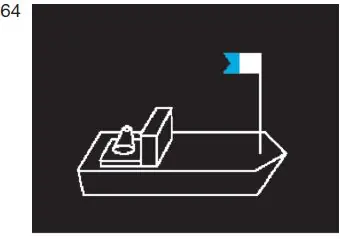
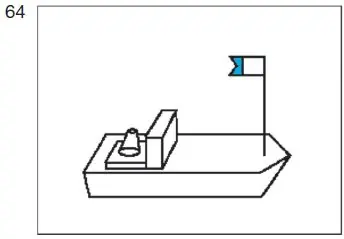

§ 8.12 Bezeichnung beim Einsatz von Tauchern(Anlage 3: Bild 64)
Binnenschifffahrtsstraßen-Ordnung
Eine Stelle oder ein Fahrzeug, von der oder dem aus Taucherarbeiten durchgeführt werden, muss bei Tag und bei Nacht außer der nach dieser Verordnung vorgeschriebenen Bezeichnung führen:
eine weiß-blaue Flagge (Flagge „Alpha“ des Inter- nationalen Signalbuchs). |  |  |
Diese Flagge muss an einer geeigneten Stelle und so hoch geführt werden, dass sie von allen Seiten sichtbar ist. Bei Nacht ist sie anzustrahlen. Die Flagge kann durch eine Tafel oder einen Ball gleicher Farbe ersetzt werden.